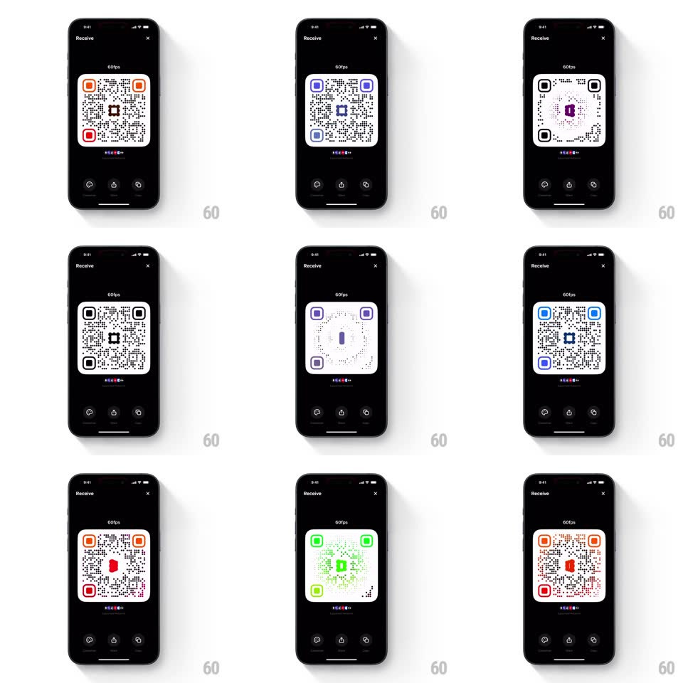

Media
Frame-by-frame

Rebuild this interaction 1:1: Family's QR showcase loop - on the "Receive" screen, the customized QR code runs an automatic looping animation: the center logo flips in 3D (rotating around its vertical axis), the QR's corner finder squares cycle through vibrant colors, and a color pulse sweeps across the code, all while the QR gently scales in a breathing pulse.

Rebuild this interaction 1:1: Family's QR showcase loop - on the "Receive" screen, the customized QR code runs an automatic looping animation: the center logo flips in 3D (rotating around its vertical axis), the QR's corner finder squares cycle through vibrant colors, and a color pulse sweeps across the code, all while the QR gently scales in a breathing pulse.
## Integration
Integration: stack-agnostic spec - springs given as stiffness/damping, timed motions as duration + curve; map every value to your framework and animation library of choice.
## Scene
Black "Receive" screen: a QR code ("60fps" label above, colorful dot strip below) with rounded finder squares, a center logo, and three action buttons at the bottom.
## Motion spec
Pattern: looping 3D logo flip with color cycling and pulse.
- The center logo rotates around its vertical axis (rotateY 0 -> 360deg, 2s, ease-in-out), revealing a different colored face/logo on the back, then flips again on the next cycle.
- The three finder squares cycle hues in sequence (top-left -> top-right -> bottom-left, each stepping through red/orange/purple/blue/green, 250ms per color step, crossfading).
- A color pulse sweeps outward from the logo across the modules (a wave of the accent hue passing over the dots, ~800ms per sweep) timed to each logo flip.
- The whole QR breathes (scale 1 -> 1.02 -> 1, 2s loop) in sync with the flip.
- The loop repeats indefinitely; the action buttons and labels stay static.
## Calibration
- The flip has real perspective (slight skew and shading at 90deg) - not a flat mirror.
- Module dots stay dark throughout; only finder squares and the sweep carry color.
## Reduced motion
Static QR with the default logo face and finder colors.
## Don't miss
- The logo flip and the color pulse are phase-locked - the sweep starts at the logo as it turns.
- Finder-square colors cycle in order around the code, never randomly.